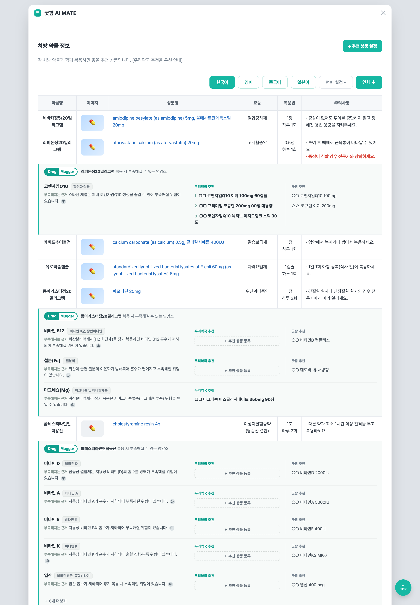
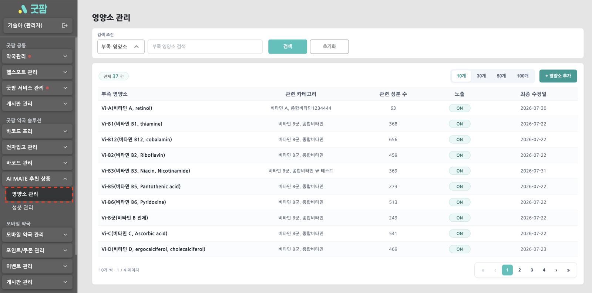
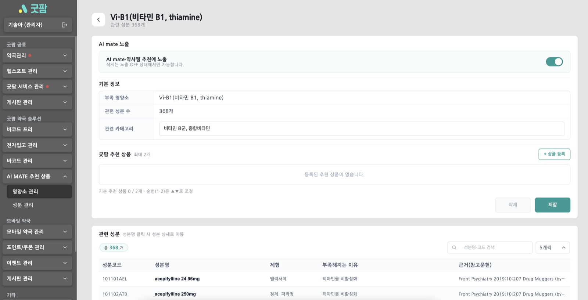
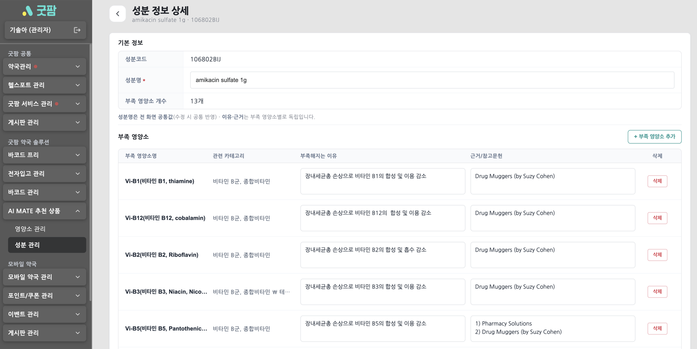
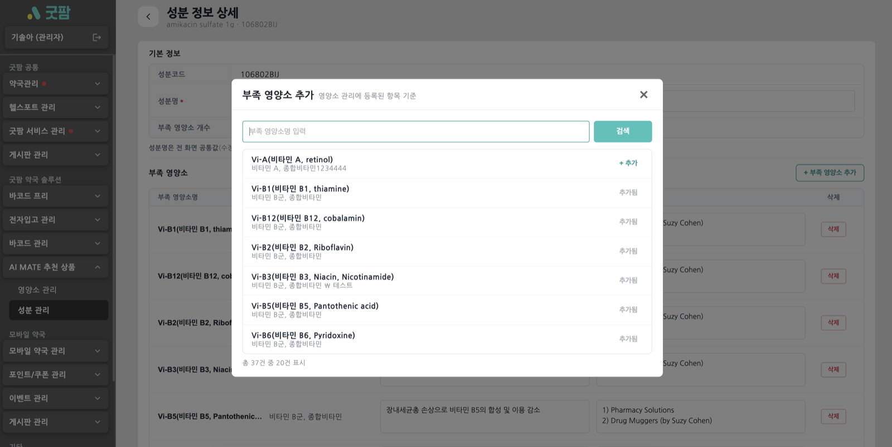
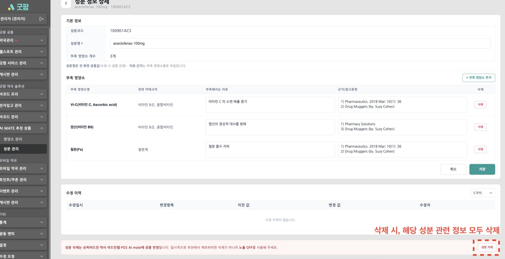
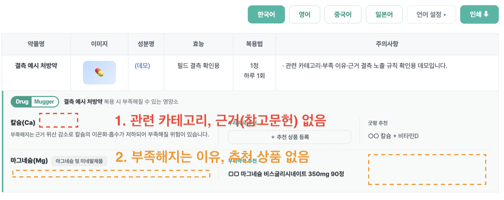
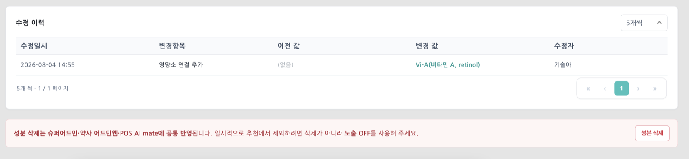
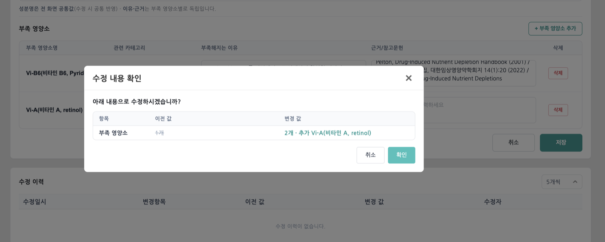

AI mate 드럭머거 & 추천 상품 안내서
드럭머거는 특정 약을 복용할 때 일부 영양소가 부족해질 수 있는 정보를 알려주는 상담 참고 기능입니다. AI mate는 이 정보를 바탕으로 부족해질 수 있는 영양소와 관련 추천 상품을 함께 보여줍니다.
이 문서는 굿팜 내부용(운영자·CS) 안내서입니다. 약사님께 전달하는 외부 안내서는 여기에서 확인하세요.
1AI mate 추천 상품이란?
환자의 처방 약물을 바탕으로, 그 약을 복용할 때 부족해질 수 있는 영양소와 이를 보충할 추천 상품을 함께 보여주는 상담 참고 기능입니다.
두 가지 추천 상품
| 구분 | 무엇인가요? | 누가 정하나요? |
|---|---|---|
| 우리약국 추천 상품 | 우리 약국이 직접 골라 등록한 상품 | 약국(관리자 웹페이지에서 설정) |
| 굿팜 추천 상품 | 굿팜이 기본으로 제공하는 상품 | 굿팜 운영자(약국은 수정 불가) |
AI MATE 화면에서는 우리약국 추천 상품이 굿팜 추천 상품보다 먼저 표시됩니다.

2AI MATE 화면에서 어디에 보이나요?
처방 상세 분석 화면에서, 처방 약물표 바로 아래에 추천 영역이 자동으로 표시됩니다.

화면에 보이는 정보
- 이 약을 복용할 때 부족해질 수 있는 영양소
- 그 영양소가 부족해지는 이유(상담 참고 설명)와 근거
- 영양소별 우리약국 추천 상품과 굿팜 추천 상품
AI MATE 화면은 조회 전용입니다. AI MATE 화면에서는 추천 정보를 확인만 할 수 있습니다. 추천 상품을 추가하거나 수정하려면 관리자 웹페이지에서 설정해야 합니다.
3추천 상품은 언제 표시되나요?
영양소마다, 추천 상품이 하나라도 있을 때만 AI MATE 화면에 해당 영양소 블록이 표시됩니다.
| 상황 | AI MATE 표시 | 설명 |
|---|---|---|
| 우리약국 추천만 있음 | 표시됨 | 우리약국 추천 상품이 표시됩니다. |
| 굿팜 추천만 있음 | 표시됨 | 굿팜 추천 상품이 표시됩니다. |
| 둘 다 있음 | 표시됨 | 우리약국 → 굿팜 순서로 함께 표시됩니다. |
| 둘 다 없음 | 표시 안 됨 | 해당 영양소 블록이 나타나지 않습니다. (정상) |
| 노출 중지(OFF) | 표시 안 됨 | 굿팜에서 잠시 노출을 중지한 상태입니다. (정상) |
| 시스템 오류 | 오류 화면 | “추천 정보를 불러오지 못했습니다” 오류 화면이 표시됩니다. |
4우리약국 추천 상품은 어디서 설정하나요?
관리자 웹페이지에서 설정합니다. 영양소별로 우리 약국이 권하고 싶은 상품을 직접 등록할 수 있습니다.


설정 방법
- 영양소 목록에서 설정할 영양소를 선택합니다.
- 우리약국 추천 상품을 등록합니다.영양소마다 최대 3개까지 등록할 수 있고, 순서도 바꿀 수 있습니다.
- 저장하면 AI MATE 화면에 반영됩니다.
- [＋ 우리약국 추천 상품 추가] 버튼을 누르면 상품 추가 화면으로 이동합니다. 상품 추가 방식은 추후 확정된 화면 기준으로 별도 안내합니다.
- 굿팜 추천 상품은 조회만 가능합니다. 약국에서는 수정할 수 없으며, 굿팜 운영자가 관리합니다.
5“AI mate 노출 중지”는 무슨 뜻인가요?
‘노출 중지(OFF)’는 해당 영양소를 AI MATE 화면에 잠시 보이지 않게 한 상태입니다.
- AI MATE 화면에는 보이지 않습니다.
- 관리자 웹페이지에서는 그대로 확인하고, 추천 상품을 미리 등록·수정할 수 있습니다.
- 다시 노출이 켜지면(ON), 저장해 둔 상품이 그대로 AI MATE 화면에 표시됩니다.
즉, 노출이 꺼져 있어도 미리 준비해 둘 수 있습니다. 화면 하단에도 “지금 등록·수정한 설정값은 노출이 재개되면 그대로 사용됩니다”라는 안내가 표시됩니다.

6추천 상품이 안 보이는 경우
추천 상품이 보이지 않는다고 해서 항상 오류는 아닙니다. 대부분은 정상적인 미표시입니다.
| 경우 | 구분 | 설명 |
|---|---|---|
| 추천 상품이 등록되지 않음 | 정상 | 등록된 상품이 없어 블록이 표시되지 않습니다. |
| 노출 중지(OFF) 상태 | 정상 | 굿팜에서 잠시 노출을 중지했습니다. |
| 연결된 정보가 없음 | 정상 | 해당 영양소에 연결된 추천 정보가 없습니다. |
| 삭제 처리됨 | 정상 | 굿팜에서 전 서비스에 보이지 않도록 처리했습니다. |
| 일시적인 시스템 오류 | 오류 | 오류 시 오류 화면이 표시됩니다. 이때만 오류입니다. |
오류 화면이 표시될 때만 시스템 오류입니다. 그 외에 그냥 안 보이는 경우는 대부분 정상입니다.

7자주 묻는 질문
1굿팜 운영자는 무엇을 관리하나요?
운영자는 슈퍼어드민에서 영양소 관리와 성분 관리 두 가지를 사용합니다.
| 메뉴 | 한마디로 | 주로 하는 일 |
|---|---|---|
| 영양소 관리 | “무엇을 보여줄지” 관리 | 어떤 영양소를 보여줄지, 어떤 굿팜 추천 상품을 붙일지, 노출할지 말지 |
| 성분 관리 | “왜 부족해지는지” 관리 | 어떤 약물 성분 때문에 어떤 영양소가 부족해질 수 있는지, 그 이유와 근거 |

2영양소 관리
환자에게 보여줄 부족 영양소와, 그 부족 영양소에 붙는 굿팜 추천 상품·노출 여부를 관리하는 화면입니다.

- 관련 카테고리 — 부족 영양소가 속한 분류를 표시·참고용으로 관리합니다.
- 굿팜 추천 상품 — 부족 영양소별 최대 2개까지 설정합니다.
- 노출 ON/OFF — AI MATE 화면에 보일지 말지를 켜고 끕니다. 새 부족 영양소는 기본적으로 노출 중지(OFF)로 시작하고, 검토 후 노출을 켭니다.
- 관련 성분 확인 — 이 부족 영양소가 어떤 약물 성분과 연결되어 있는지 목록으로 확인합니다.
- 삭제 — 전 서비스에서 보이지 않게 처리합니다. (다음 5번 참고)
3성분 관리
어떤 약물 성분 때문에 어떤 영양소가 부족해질 수 있는지, 그 이유와 근거를 관리하는 화면입니다.


- 성분명 — 약물 성분의 이름을 관리합니다.
- 부족 영양소 연결 — 이 성분 때문에 부족해질 수 있는 영양소를 연결합니다.
- 부족해지는 이유 — 상담에서 참고할 수 있는 설명을 관리합니다.
- 근거(참고문헌) — 설명의 근거가 되는 자료를 관리합니다.
- 성분 삭제 — 이 성분과 연결된 정보를 전 서비스에서 보이지 않게 처리합니다. (다음 6번 참고)
4추천 상품이 표시되는 기본 원칙
영양소마다, 추천 상품이 하나라도 있을 때만 AI MATE 화면에 표시됩니다.
| 상황 | AI MATE 표시 | 설명 |
|---|---|---|
| 우리약국 추천 있음 | 표시됨 | 약국이 등록한 상품이 먼저 표시됩니다. |
| 굿팜 추천 있음 | 표시됨 | 굿팜 추천 상품이 표시됩니다. |
| 둘 다 없음 | 표시 안 됨 | 해당 영양소 블록이 나타나지 않습니다. (정상) |
| 노출 중지(OFF) | 표시 안 됨 | 잠시 노출을 중지한 상태입니다. (정상) |
| 삭제됨 | 표시 안 됨 | 전 서비스에서 보이지 않도록 처리했습니다. |
| 시스템 오류 | 오류 화면 | 오류 화면이 표시됩니다. |
5OFF와 삭제의 차이
둘 다 “AI MATE 화면에서 안 보이게” 하지만 성격이 다릅니다. 잠시 내릴 때는 OFF, 더 이상 쓰지 않을 때는 삭제입니다.
| 항목 | 노출 중지(OFF) | 삭제 |
|---|---|---|
| 의미 | AI MATE 화면 노출만 잠시 중지 | 전 서비스에서 보이지 않게 처리 |
| 데이터 보존 | 보존됨 | 원천 데이터·이력 보존됨 |
| 관리자 웹페이지 표시 | 표시됨(설정 가능) | 표시 안 됨 |
| 다시 사용 | ON 하면 바로 복귀 | 필요하면 다시 등록 |
| 이럴 때 사용 | 잠시 내렸다 다시 올릴 때 | 더 이상 사용하지 않을 때 |
일시적으로 제외하려면 삭제가 아니라 OFF를 사용하세요. 삭제는 전 서비스에 영향을 줍니다.
6성분 삭제 시 주의사항
성분을 삭제하면 그 성분과 연결된 추천 정보·이유·근거가 함께 보이지 않게 됩니다.
- 영향 범위 — 삭제한 성분에 연결된 추천 정보, 부족해지는 이유, 근거가 모두 대상입니다.
- 전 서비스 미노출 — 슈퍼어드민 · 관리자 웹페이지 · AI MATE 화면 모두에서 보이지 않습니다.
- 이력 보존 — 삭제 이력과 원천 데이터는 그대로 보존됩니다.
성분 삭제는 여러 화면에 한꺼번에 영향을 줍니다. 잠시만 내릴 목적이라면 삭제 대신 OFF를 사용하세요.

7정보가 일부 비어 있는 경우
이유·근거·카테고리 일부가 비어 있어도, 추천 상품이 있으면 AI MATE 화면에 표시됩니다. 비어 있는 항목만 생략됩니다.
| 비어 있는 항목 | AI MATE 처리 |
|---|---|
| 부족해지는 이유 없음 | 이유 설명만 생략하고, 나머지는 그대로 표시 |
| 근거(참고문헌) 없음 | 근거 표시(ⓘ)만 생략하고, 나머지는 그대로 표시 |
| 관련 카테고리 없음 | 카테고리 표시만 생략 |
| 추천 상품 없음 | 블록 자체가 표시되지 않음 |

8변경 이력은 어디서 보나요?
영양소 관리·성분 관리의 상세 화면 맨 아래에 있는 수정 이력 표에서 확인합니다. 무엇을, 언제, 누가 바꿨는지 한 줄씩 쌓입니다. (바뀐 항목만 기록됩니다.)
| 보는 곳 | 표에 나오는 항목 | 기록되는 변경 |
|---|---|---|
| 영양소 관리 상세 → 수정 이력 | 수정일시 · 변경항목 · 이전 값 · 변경 값 · 수정자 | 관련 카테고리 · 굿팜 추천 상품 · 노출(ON/OFF) |
| 성분 관리 상세 → 수정 이력 | 수정일시 · 수정 항목 · 변경 전 · 변경 후 · 수정자 | 성분명 · 부족해지는 이유 · 근거 |
| 성분 삭제 이력 (별도 창) | 삭제된 성분 목록 | 삭제 내용(원천 데이터는 보존) |


추천 정보가 언제 조회·클릭됐는지에 대한 기록(분석 로그)은 내부적으로만 남으며, 운영자 화면에 표로 보여 주는 기능은 추후 안내합니다.
마지막으로 꼭 기억할 점
- AI MATE 화면은 조회 전용입니다. 확인만 하고, 수정은 하지 않습니다.
- 우리약국 추천 상품은 관리자 웹페이지에서 설정합니다. (영양소별 최대 3개)
- 굿팜 기본 추천 상품과 노출 정책은 굿팜 운영자가 관리합니다. (영양소별 최대 2개)